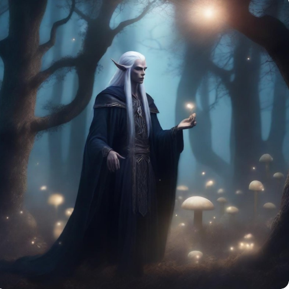
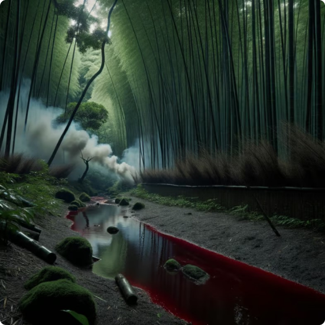
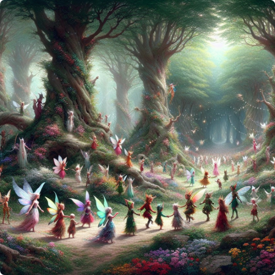

Nature Protection in Harmony with Ancient Forests

Forest Inspections: Protecting the Heart of Nature
-
To preserve the unique beauty of the elven forests, we implement systematic monitoring and inspections aimed at protecting the natural environment. Our inspectors patrol dense woods, serene water bodies, and hidden glades daily, ensuring every corner remains untouched. We pay special attention to preventing illegal activities. Forest patrols focus on combating poaching, illegal logging, and other threats that disrupt the natural balance. By utilizing specialized devices and magical technologies, we detect even the smallest signs of environmental violations to address them swiftly.
- 
-
The daily work of our inspectors includes assessing the state of water resources, analyzing air and soil quality, and monitoring the activity of rare species. Forests are living organisms, with each part requiring care and attention. Therefore, we track even minor changes that could affect their harmony. To safeguard these unique landscapes, we conduct rehabilitation efforts. This includes planting new trees, restoring damaged ecosystems, and creating natural barriers to shield against external impacts.
Our inspections serve as a shield that protects nature from destruction, while its quiet whispers echo gratitude. The forests remain places of life, magic, and inspiration, as they have always been for the elves and the world.
-

-
